# Attaching packages (red = needs update)
⚠ insight 0.13.1.1 ⚠ bayestestR 0.8.3.1
⚠ performance 0.7.0.1 ⚠ parameters 0.12.0.1
✔ see 0.6.2.1 ⚠ effectsize 0.4.3.1
⚠ correlation 0.6.0.1 ✔ modelbased 0.5.9
✔ report 0.2.0
Warnings or errors in CRAN checks for package(s) 'bayestestR', 'parameters', 'effectsize', 'correlation', 'see'.
Restart the R-Session and update packages in red with 'easystats::easystats_update()'.This week we will:
By learning how to simulate data you will better understand what a regression model is doing.
Additionally, you will need to understand simulation to follow the seminars on causal inference and multilevel modelling.
rnormrnorm is a R’s random number generator. Within this function:
n: specifies the number of observations that you will generatesd: specifies the value of the standard deviationmean: specifies the value of the mean# seed
set.seed(123)
# generate random numbers
ds <- rnorm(n = 1000,
mean = 0,
sd = 1)
dplyr::glimpse(ds)
num [1:1000] -0.5605 -0.2302 1.5587 0.0705 0.1293 ...We can create a histogram:
p1 <- ggplot2::qplot(ds) + labs(title = "1st random number list")
p1
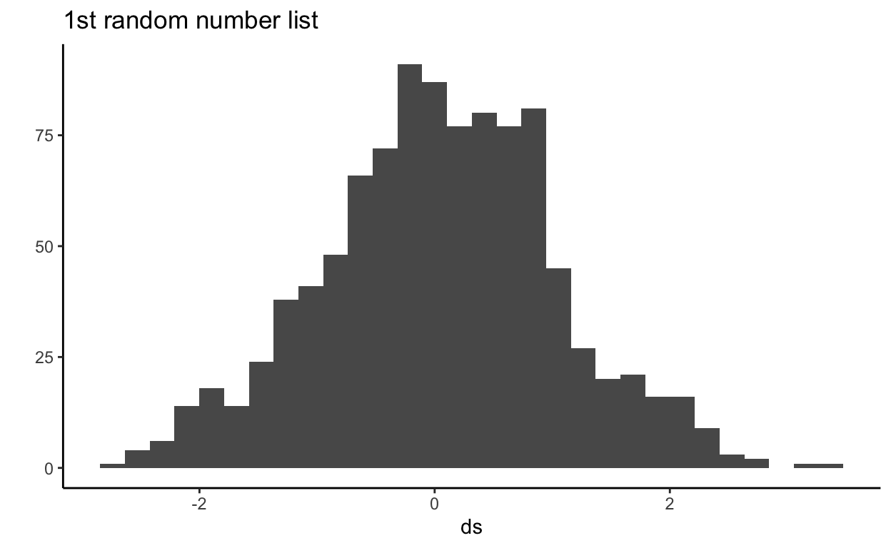
Note that R users frequently shorten the above code, which can be written:
set.seed(123)
# generate random numbers
ds2 <- rnorm(1000)
# check whether the abbreviated simulated vector is the same as the long form vector
all.equal( ds, ds2 )
[1] TRUEWe used set.seed to ensure that the same random vector will be generated for our audience. We can also use set.seed to ensure that a different vector will be generated.
Here we ise a different seed to produce a new random sample; we then check whether the new simulated sample differs from the previous random sample:
set.seed(54321)
ds3 <- rnorm(1000)
# dplyr::glimpse( ds3 ) # uncomment to glimpse at the data
# better method
identical(ds, ds3)
[1] FALSEWe can assess the average by-row difference:
#check equality
all.equal(ds , ds3)
[1] "Mean relative difference: 1.44105"Indeed, these differences are large enough to detect visually":
p2 <- ggplot2::qplot(ds3) + labs(title = "2d random number list")
# plot two graphs, each with different random samples
p1 + p2 +
plot_annotation("Random samples", tag_levels = 'i')
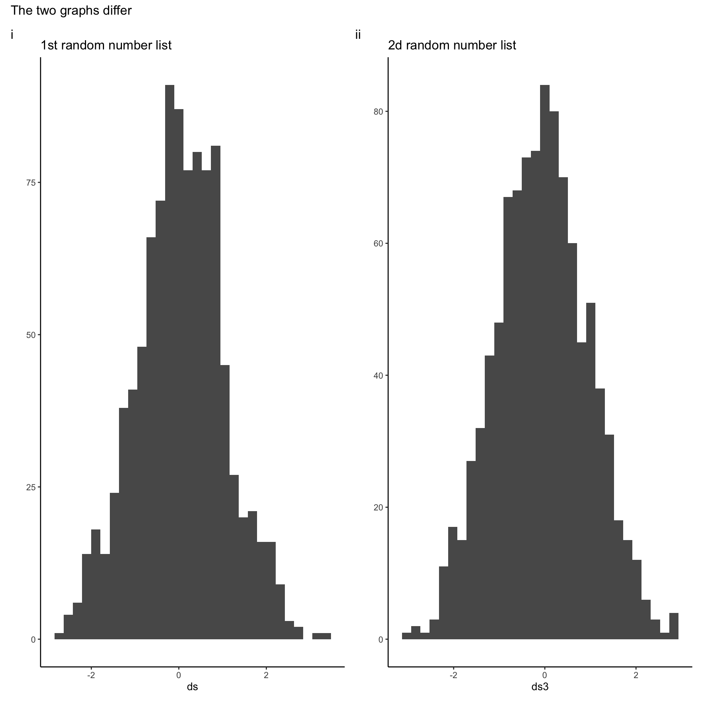
runifWe use r uniform to generate continuous data within a point range
set.seed(123)
# 100 numbers between zero and 50
ds4 <- runif(n = 100, min = 0, max = 50)
dplyr::glimpse(ds4)
num [1:100] 14.4 39.4 20.4 44.2 47 ...
# how long is the vector?
length(ds4)
[1] 100
# visualise how are the data distributed?
hist(ds4, breaks = 100)
repHow can we generate random factors.
For this, R’s rep function, letters function, and LETTERS function make happy friends. Here’s how these functions may be combined:
Create lower case letters:
letters[1:3]
[1] "a" "b" "c"Create upper case letters:
LETTERS[4:10]
[1] "D" "E" "F" "G" "H" "I" "J"Create sequences using each
rep(letters[1:3], each = 3)
[1] "a" "a" "a" "b" "b" "b" "c" "c" "c"Create sequences using times
rep( letters[1:3], times = 3 )
[1] "a" "b" "c" "a" "b" "c" "a" "b" "c"Create uneven sequences:
Combine each + times:
rep(letters[1:3], each = 2, times = 3)
[1] "a" "a" "b" "b" "c" "c" "a" "a" "b" "b" "c" "c" "a" "a"
[15] "b" "b" "c" "c"length.out
rep(letters[1:3], each = 2, length.out = 17)
[1] "a" "a" "b" "b" "c" "c" "a" "a" "b" "b" "c" "c" "a" "a"
[15] "b" "b" "c"Note length.out take priority over times – use length.out if you have a fixed vector length.
seqCreate a vector of numbers of a specific length:
seq(from = 1, to = 45, by = 1)
[1] 1 2 3 4 5 6 7 8 9 10 11 12 13 14 15 16 17 18
[19] 19 20 21 22 23 24 25 26 27 28 29 30 31 32 33 34 35 36
[37] 37 38 39 40 41 42 43 44 4517 unit steps:
seq(from = 1, to = 45, by = 17)
[1] 1 18 3517 steps:
seq(from = 1, to = 45, length.out = 17)
[1] 1.00 3.75 6.50 9.25 12.00 14.75 17.50 20.25 23.00
[10] 25.75 28.50 31.25 34.00 36.75 39.50 42.25 45.00We can use vectors within random number generation
set.seed(123)
vdf<-rnorm(n = 20,
mean = c(0, 500, 1000, 10000),
sd = c(5,50,100,1000))
# we created a vector
# dplyr::glimpse(vdf) # reveal to show structure
# quick graph
qplot(vdf, binwidth=4) # note the combined means + sds around them.
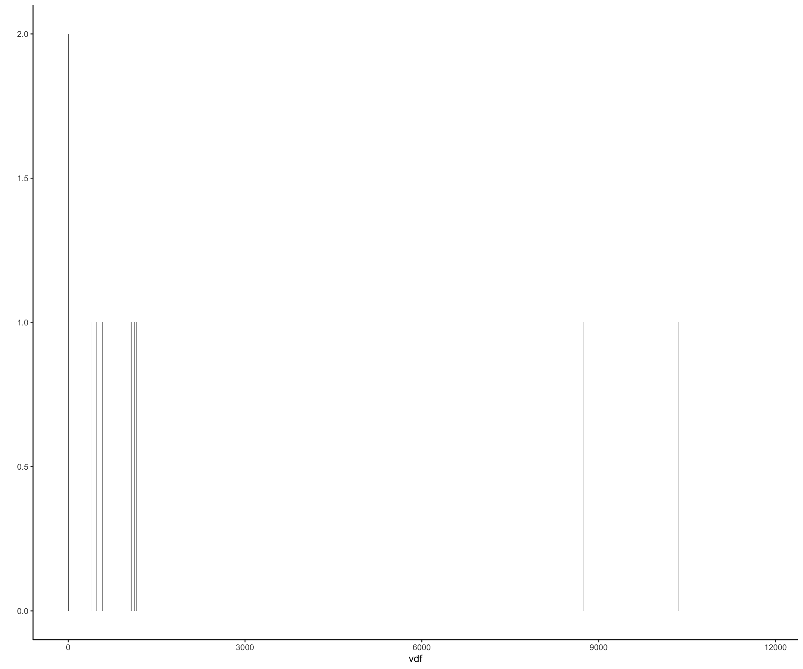
Recall the relationship between mother’s heights and daughters heights in the Pearson/Fox dataset:
# recall this model
explore_md <- ggplot2::ggplot(data = md_df,
aes(y = daughter_height,
x = mother_height)) +
geom_jitter(alpha = .2) +
labs(title = "The relationship between mothers height and daughter's height") +
ylab("Daughter's height") +
xlab("Mother's height") +
theme_classic()
# plot
explore_md
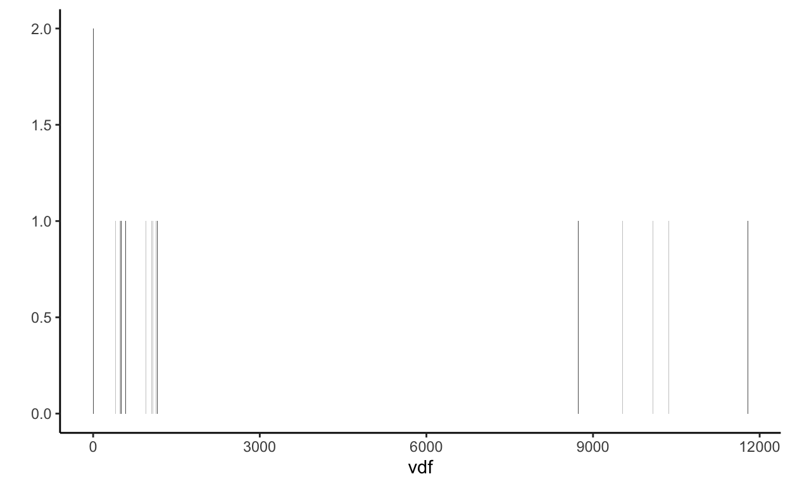
What would a random relationship look like?
Simulation can help us to address this question.
# average daughter height
av_dh <- mean(md_df$daughter_height, na.rm = TRUE)
# sd of daughter height
sd_dh <- sd(md_df$daughter_height, na.rm = TRUE)
# average mother height
av_mh <- mean(md_df$mother_height, na.rm = TRUE)
# sd of mother height
sd_mh <- sd(md_df$mother_height, na.rm = TRUE)
# number of obs
N <- nrow(md_df) # 5524
# fake data
# simulate values for these parameters but do not relate the two parameters
sim_dh = rnorm(N, av_dh, sd_dh)
sim_mh = rnorm(N, av_mh, sd_mh)
# create a datframe of the simulations
sim_df_md <- data.frame(sim_dh, sim_mh)
# graph the data
fake_md <- ggplot2::ggplot(data = sim_df_md,
aes(y = sim_dh, x = sim_mh)) +
geom_jitter(alpha = .2) +
geom_smooth(method = lm) +
theme_classic() +
labs(title = "Fake data relationship between mothers height and daughter's height") +
ylab("Daughter's height") +
xlab("Mother's height")
# real data
explore_md <-ggplot2::ggplot(data = md_df, aes(y = daughter_height, x = mother_height)) +
geom_jitter(alpha = .2) +
labs(title = "The relationship between mothers height and daughter's height") +
ylab("Daughter's height") +
xlab("Mother's height") + theme_classic() +
geom_smooth(method = lm)
# plot uncorrelated data against data plot
library(patchwork)
fake_md + explore_md + plot_annotation(tag_levels = "a")
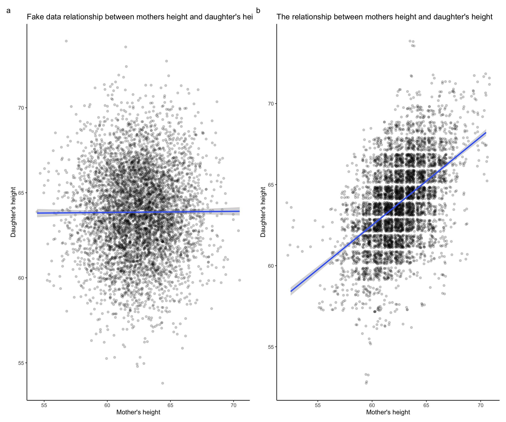
What would a postive linear relationship look like?
Simulation can help us to address this question too.
N <- nrow(md_df)
# average mother height
set.seed(123)
md_df$daughter_height_c = scale(md_df$daughter_height, scale = FALSE) # center but not scale
md_df$mother_height_c = scale(md_df$mother_height, scale = FALSE) # center but not scale
mh_fake_c <- runif(N,
min = min(as.numeric(md_df$mother_height_c), na.rm=TRUE),
max = max(as.numeric(md_df$mother_height_c), na.rm = TRUE))
# let's take the intercept as the average height of daughters
a <- rnorm(N, mean = , mean(md_df$daughter_height), sd = 5)
# recall the beta for the model was .55,
b <- rnorm(N,mean = .55, sd = .1)
# now the outcome: this is just the linear model:
dh_fake <- a + b * mh_fake_c
md_fake <- data.frame(mh_fake_c, dh_fake)
mod_fake <-lm(dh_fake ~ mh_fake_c, data = md_fake)
# Simulated relationship
sim_plot <- plot(
ggeffects::ggpredict(mod_fake,
terms = c("mh_fake_c [all]")),
add.data = TRUE,
dot.alpha = .2
) + labs(title = "Simulated relationship") +
xlab("simulated mother height") + ylab("simulated daughter height")
# measured relationship
mod_real <-lm(daughter_height ~ mother_height, data = md_df)
# Simulated relationship
real_plot <- plot(
ggeffects::ggpredict(mod_real,
terms = c("mother_height [all]")),
add.data = TRUE,
dot.alpha = .2
) + labs(title = "Actual relationship") + ylab("simulated daughter height")
# graph both
library(patchwork)
sim_plot + real_plot +
plot_annotation("Simulated Model and Data-based Model",
subtitle = "Daughters heights predicted by mother's heights")
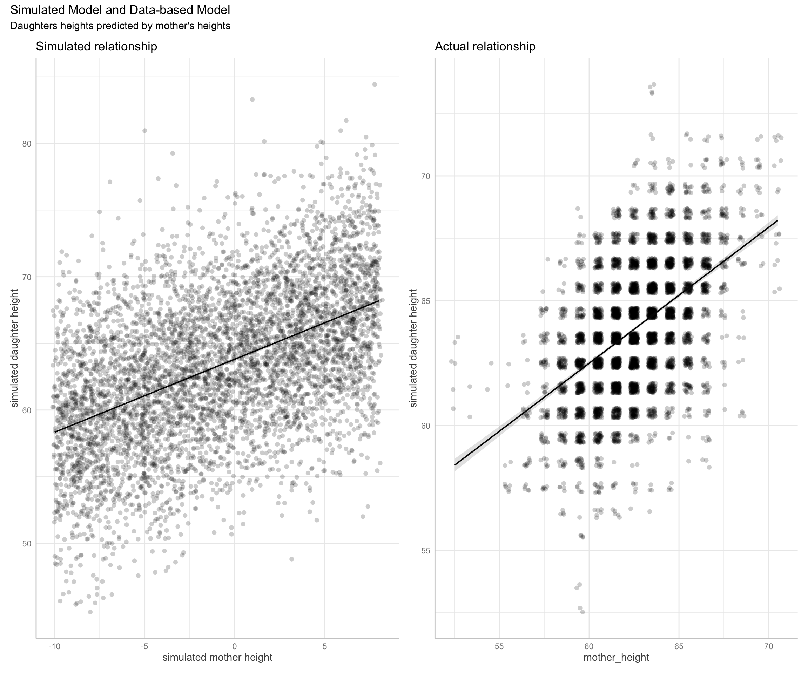
What do we learn from the real data that we cannot obtain from the fake data?
Here’s a shortcut we will occasionally use to simulate a dependency
sim_dh2 = rnorm(N, sim_mh)
# quick plot
plot(sim_dh2 ~ sim_mh) + title(main = "Qucik simulation of a data dependency")
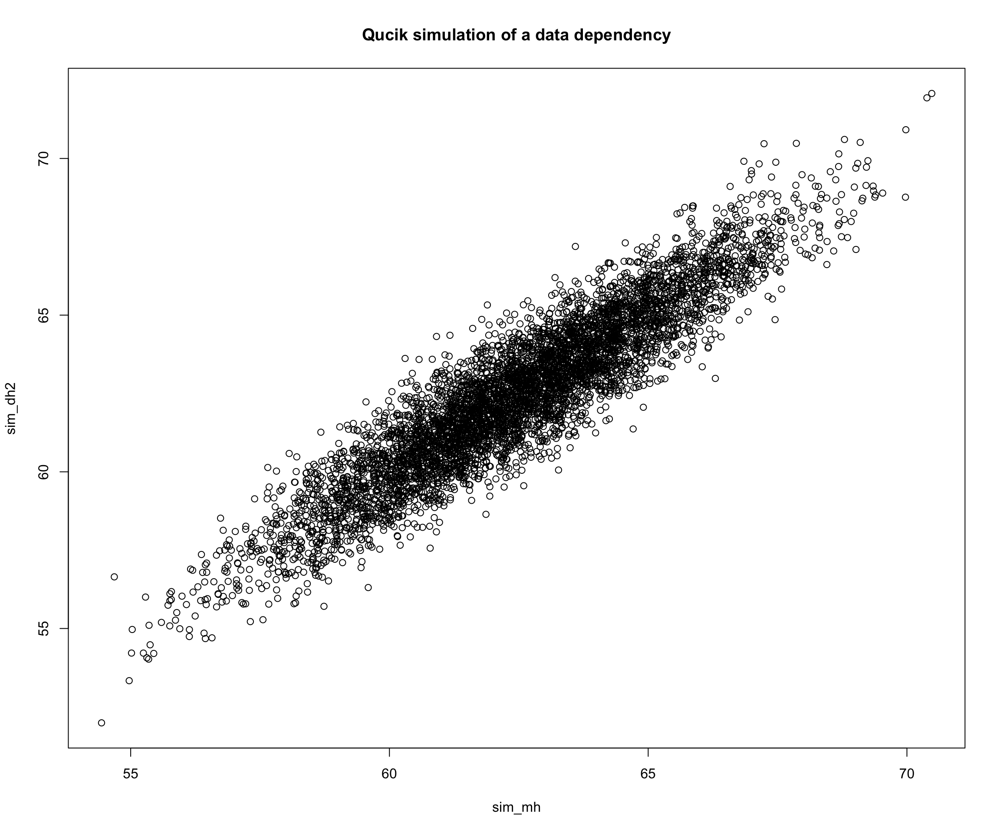
integer(0)We can quickly generate a negative relationship
sim_dh3 = rnorm(N, -sim_mh)
# quick plot
plot(sim_dh3 ~ sim_mh) + title(main = "Qucik simulation of a negative data dependency")
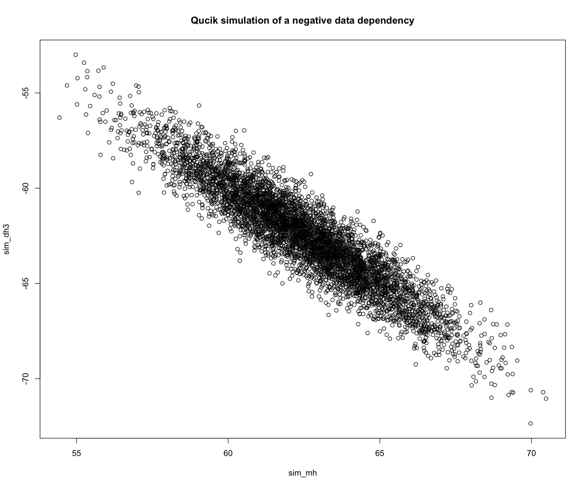
integer(0)Increase the standard deviation from 1 to 5
sim_dh4 = rnorm(N, -sim_mh, sd = 5)
# quick plot
plot(sim_dh4 ~ sim_mh) + title(main = "Qucik simulation of a data dependency with larger standard deviation")
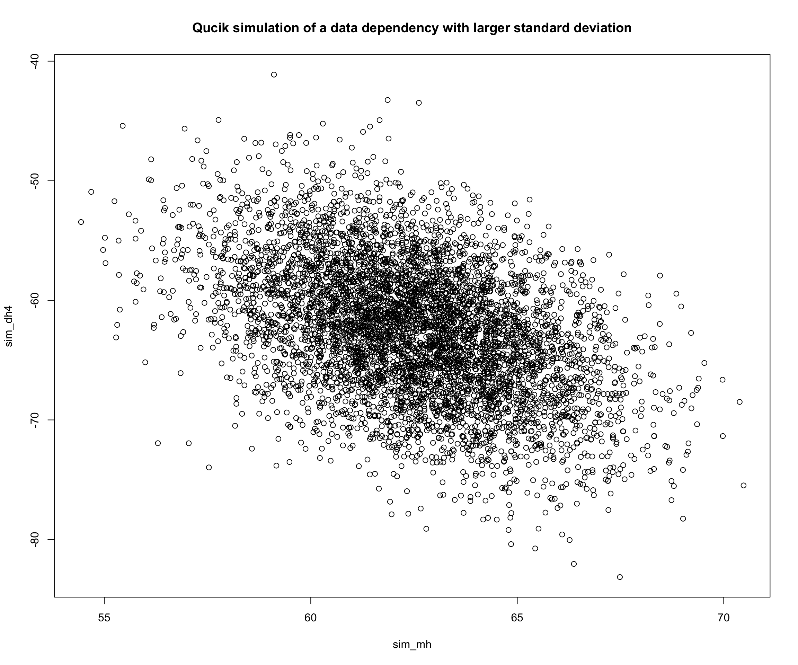
integer(0)We might think there is a relationship when we know (owing to simulation) that there is no relationship.
Do you see a linear relationship?
set.seed(123)
# no relationship between x and y
x = rnorm(n = 10, mean = 0, sd = 1)
y = rnorm(n = 10, mean = 0, sd = 1)
bar_df <- data.frame(x,y)
# Barely significant linear model?
summary(bad <-lm(y ~ x , data = bar_df))
Call:
lm(formula = y ~ x, data = bar_df)
Residuals:
Min 1Q Median 3Q Max
-1.33303 -0.64421 -0.02448 0.49596 1.41472
Coefficients:
Estimate Std. Error t value Pr(>|t|)
(Intercept) 0.1617 0.2852 0.567 0.5863
x 0.6287 0.3141 2.001 0.0803 .
---
Signif. codes:
0 '***' 0.001 '**' 0.01 '*' 0.05 '.' 0.1 ' ' 1
Residual standard error: 0.8988 on 8 degrees of freedom
Multiple R-squared: 0.3336, Adjusted R-squared: 0.2503
F-statistic: 4.006 on 1 and 8 DF, p-value: 0.08034ggplot2::ggplot(bar_df,aes(y,x)) + geom_point() + geom_smooth(method=lm)
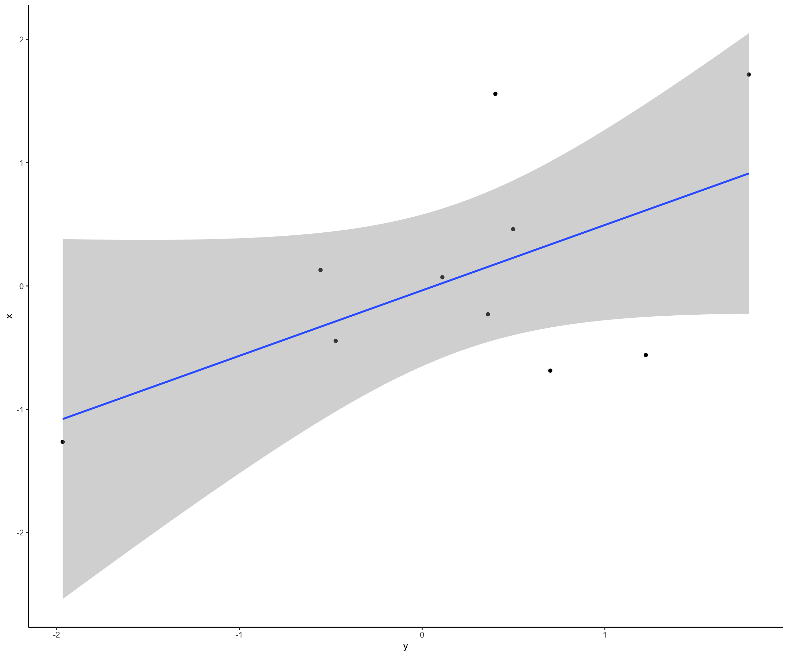
Is this a one off?
Go Bayesian? Note that the default implies a reliable association
bad_bayes <- brms::brm(y ~ x, data = bar_df, file = here::here("models", "bad_bayes"))
bayestestR::describe_posterior( bad_bayes )
# Fixed effects
Parameter | Median | 89% CI | pd | ROPE | % in ROPE | Rhat | ESS
-------------------------------------------------------------------------------------------
(Intercept) | 0.17 | [-0.37, 0.71] | 69.67% | [-0.10, 0.10] | 24.66% | 1.000 | 3014.46
x | 0.62 | [ 0.08, 1.21] | 95.70% | [-0.10, 0.10] | 0.93% | 1.001 | 2638.88
# find the coefficient does not cross zero!
plot( parameters::model_parameters( bad_bayes ) )
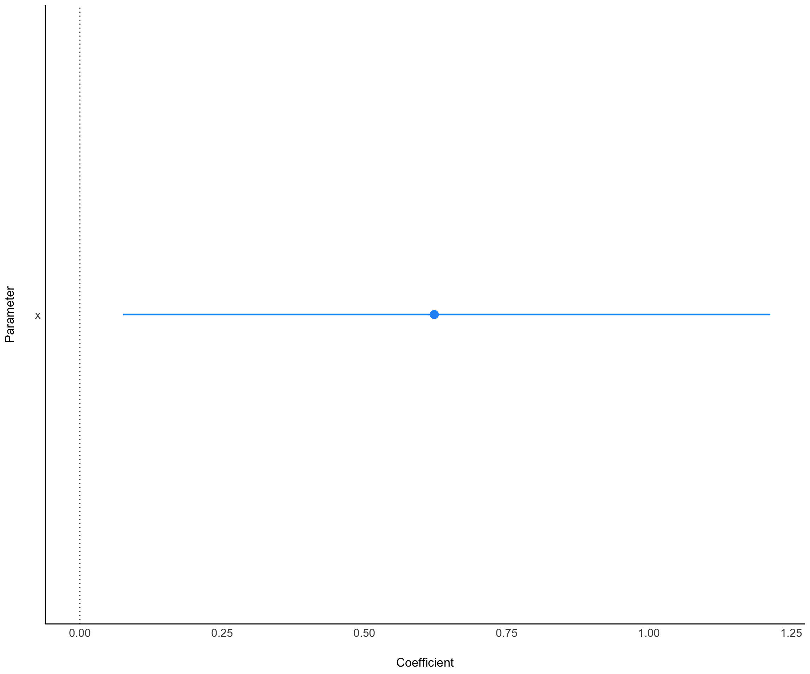
We can replicate a result many times, without relying on one seeded draw.
The are two steps.
First we make our one off simulation into a function. We do this so that the simulation can be repeated many times.
Here is a function:
# function for simulating a relationship
simple_sim = function(mn, sd) {
# we will plug numbers in for 'mn' and 'sd'
x_out = rnorm(mn, sd) # random x
y_out = rnorm(mn, sd) # random y (uncorrelated)
dat = data.frame(x_out, y_out) # bind into a dataframe
lm(y_out ~ x_out, data = dat) # linear model
}
# try it out
set.seed(123)
m1<-simple_sim(10,1) # n = 10
sjPlot::tab_model(m1) # almost significant!
| y_out | |||
|---|---|---|---|
| Predictors | Estimates | CI | p |
| (Intercept) | 0.53 | -0.48 – 1.55 | 0.262 |
| x_out | 0.63 | -0.10 – 1.35 | 0.080 |
| Observations | 10 | ||
| R2 / R2 adjusted | 0.334 / 0.250 | ||
Second, we use replicate to generate many outcomes from this function:
sms = replicate(100, simple_sim(10,1), simplify = FALSE ) # make 100 examples
# we set simplify to "FALSE" to recover a list
sms[[100]] # here is the 100th outcome
Call:
lm(formula = y_out ~ x_out, data = dat)
Coefficients:
(Intercept) x_out
0.98366 0.08593 Combine purrr and broom to get the simulation
# A tibble: 200 x 5
term estimate std.error statistic p.value
<chr> <dbl> <dbl> <dbl> <dbl>
1 (Intercept) 1.46 0.190 7.71 0.0000567
2 x_out -0.248 0.180 -1.38 0.206
3 (Intercept) 1.10 0.394 2.78 0.0238
4 x_out 0.126 0.276 0.455 0.661
5 (Intercept) 0.275 0.513 0.536 0.607
6 x_out 0.323 0.358 0.901 0.394
7 (Intercept) 1.52 0.974 1.57 0.156
8 x_out -0.0667 0.690 -0.0967 0.925
9 (Intercept) 0.736 0.330 2.23 0.0561
10 x_out -0.0971 0.366 -0.266 0.797
# … with 190 more rowsHow many p.values are less than or equalt to p = .05?
mapped<-map_dfr(sms, broom::tidy)%>%
filter(term == "x_out") # note we only want the coefficients not the intercept
# In 5 cases we find p <=.05
sum(mapped$p.value <=.05) / length(mapped$p.value) # we find 5% of the simulations yield "significant values"
[1] 0.05Is this surprising?
Which proportion is negative and statistically significant?
sum((mapped$estimate < 0) & mapped$p.value <=.05 )/ length(mapped$estimate) # we find 5% of the simulations yield "significant values"
[1] 0.02And which proportion is positive?
sum((mapped$estimate > 0) & mapped$p.value <=.05 )/ length(mapped$estimate) # we find 5% of the simulations yield "significant values"
[1] 0.03What does this simulation suggest to you about science?
#Polynomial
N <- 1000
# simulate weights
weight <- runif(N, min = 60, max = 120)
weight_c <- scale(weight, scale = FALSE)
# simulate coefficients
a = rnorm(N, mean = 180 , 10)
b1 = rnorm(N, mean = 2.2, .01)
b2 = -rnorm(N, mean = .02, .001)
height <- a + b1 * weight_c + b2 * weight_c ^ 2
# simulated height/ weight data
df1 <- data.frame(height, weight_c, weight)
plot(height ~ weight)
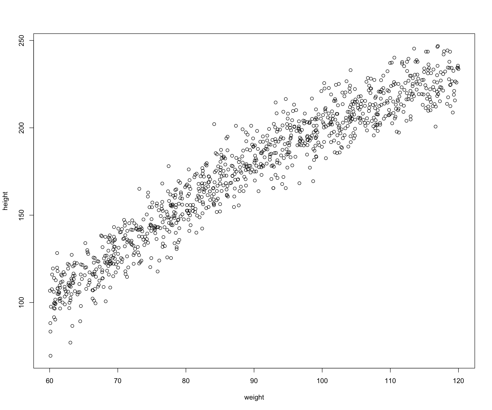
Let’s fit a linear model to the data and graph the results
m1 <- lm(height ~ weight_c, data = df1)
# graph model
plot(ggeffects::ggpredict(m1, terms = c("weight_c [all]")),
add.data = TRUE,
dot.alpha = .2) + labs(title = "simulated linear relationship") +
xlab("simulated weight") + ylab("simulated height")
sjPlot::tab_model(m1)
| height | |||
|---|---|---|---|
| Predictors | Estimates | CI | p |
| (Intercept) | 174.20 | 173.51 – 174.89 | <0.001 |
| weight_c | 2.20 | 2.16 – 2.25 | <0.001 |
| Observations | 1000 | ||
| R2 / R2 adjusted | 0.918 / 0.918 | ||
Let’s fit a non-linear model and graph the results
m2 <-lm(height ~ weight_c + I(weight_c^2), data = df1)
plot(ggeffects::ggpredict(m2, terms = c("weight_c [all]")),
add.data = TRUE,
dot.alpha = .2) + labs( title = "simulated linear relationship") +
xlab("simulated weight") + ylab("simulated height")
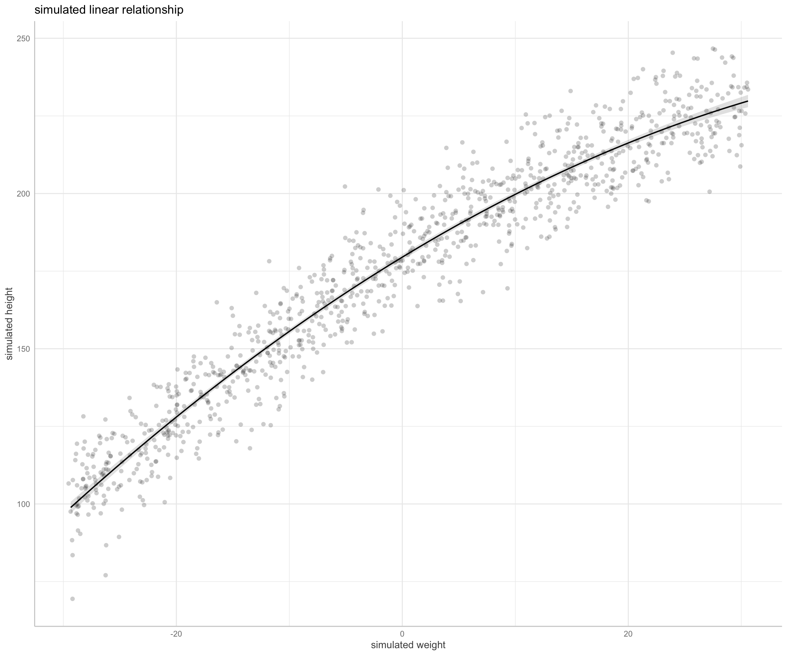
Let’s fit a non-linear model using splines and graph the results
m3 <-lm(height ~ bs(weight_c), data = df1)
plot(ggeffects::ggpredict(m3, terms = c("weight_c")),
add.data = TRUE,
dot.alpha = .2) + labs(title = "simulated linear relationship") +
xlab("simulated weight") + ylab("simulated height")
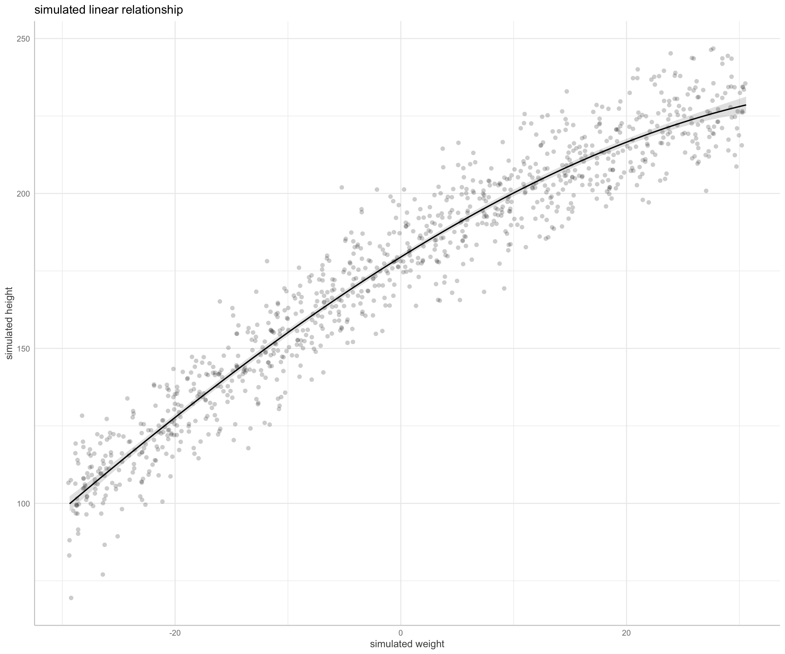
Check the linear model and perform model checks:
performance::check_model(m1)
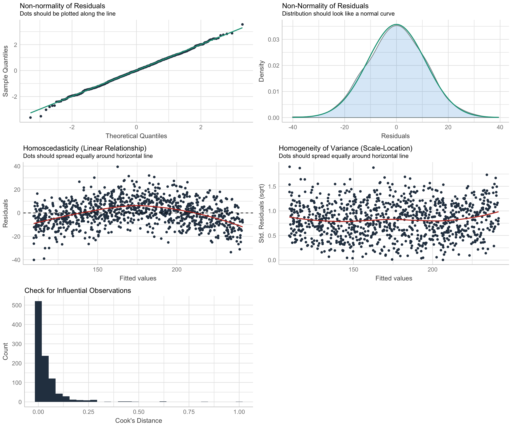
The model looks OK.
Check quadratic model (polynomial = 2)
performance::check_model(m2)
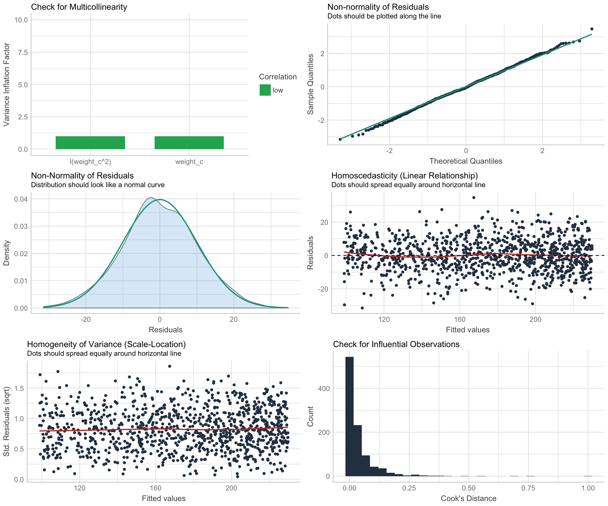
This model looks better
Check splines model.
performance::check_model(m3)
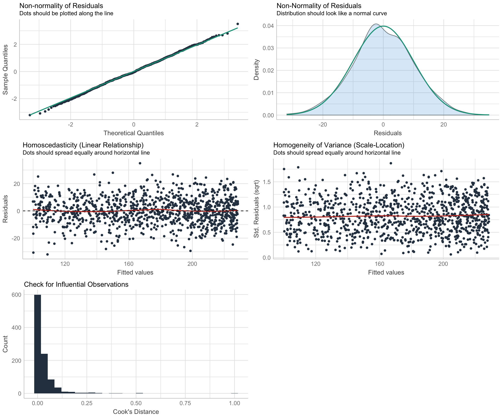
The splines model also looks better.
We can compare model performance:
performance::compare_performance(m1, m2, m3)
# Comparison of Model Performance Indices
Name | Model | AIC | BIC | R2 | R2 (adj.) | RMSE | Sigma
------------------------------------------------------------------------
m1 | lm | 7668.482 | 7683.205 | 0.918 | 0.918 | 11.160 | 11.171
m2 | lm | 7458.284 | 7477.915 | 0.934 | 0.934 | 10.036 | 10.051
m3 | lm | 7458.556 | 7483.095 | 0.934 | 0.934 | 10.028 | 10.048Which do we prefer?
The key thing to remember about regression with factors is that the intercept is intercept as the lowest category of the factor.
N <- 200 # number of observations
#group <- rep((0:1), length.out = 200) # 2 groups
group <- rep(c("m","n_m"), each = N/2) #equivalent:
a <- rnorm(N, 150, 3) # intercept
b1 <- rnorm(N, 20, 1) # coefficient of "b
sigma = rexp(N,1)# error term
outcome <- rnorm(N, mean = a + b1 * (group == "m"), sigma)
df <-data.frame(outcome,group)
#dplyr::glimpse(df)
#model removing the intercept to show the difference
ms<-lm(outcome ~ group, data = df)
# graph
sjPlot::plot_model(ms)
#table
sjPlot::tab_model(ms)
| outcome | |||
|---|---|---|---|
| Predictors | Estimates | CI | p |
| (Intercept) | 169.98 | 169.38 – 170.58 | <0.001 |
| group [n_m] | -19.79 | -20.63 – -18.94 | <0.001 |
| Observations | 200 | ||
| R2 / R2 adjusted | 0.915 / 0.915 | ||
The key thing to remember about regression with factors is that the intercept is intercept as the lowest category of the factor.
To see this we can remove the intercept by including -1 in the model. This recovers contrasts:
#model removing the intercept to show the difference
ms2<-lm(outcome ~ -1 + group, data = df)
# graph
sjPlot::plot_model(ms2)
# table
sjPlot::tab_model(ms2)
| outcome | |||
|---|---|---|---|
| Predictors | Estimates | CI | p |
| group [m] | 169.98 | 169.38 – 170.58 | <0.001 |
| group [n_m] | 150.19 | 149.60 – 150.79 | <0.001 |
| Observations | 200 | ||
| R2 / R2 adjusted | 1.000 / 1.000 | ||
Simulate two groups with mean = 6 and mean = 12
cdf <- data.frame(group = rep(letters[1:2], length.out = 100), # 2 groups
response = rnorm(n = 100, mean = c(3, 12), sd = 1)) # mean of 3 mean of
head(cdf)
group response
1 a 1.898622
2 b 10.131812
3 a 2.736358
4 b 12.508020
5 a 3.962040
6 b 10.471951Model:
m_gr<- lm(response ~ -1 + group, data = cdf)
Results
sjPlot::tab_model(m_gr)
| response | |||
|---|---|---|---|
| Predictors | Estimates | CI | p |
| group [a] | 3.06 | 2.78 – 3.34 | <0.001 |
| group [b] | 11.93 | 11.66 – 12.21 | <0.001 |
| Observations | 100 | ||
| R2 / R2 adjusted | 0.988 / 0.987 | ||
### Is imbalance wrecking my inference?
set.seed(123)
N <- 120
cells <-rep( letters[1:2], times = c(15, 105))
a <- rnorm(N, 2, 1)
b1 <- rnorm(N, .2, .1)
sigma <- rexp(N,1)
out <- rnorm(N, mean = a + b1 * (cells == "b"), sigma)
dfc<-data.frame(out,cells)
sim_cells<-lm(out ~ cells, data = dfc)
sjPlot::tab_model(sim_cells)
| out | |||
|---|---|---|---|
| Predictors | Estimates | CI | p |
| (Intercept) | 2.21 | 1.41 – 3.02 | <0.001 |
| cells [b] | -0.12 | -0.98 – 0.74 | 0.779 |
| Observations | 120 | ||
| R2 / R2 adjusted | 0.001 / -0.008 | ||
This isn’t too convincing. We need to replicate the model many times
# Make a function for the simulation
set.seed(12)
test_fun = function() {
N <- 120
cells <-rep( letters[1:2], times = c(110, 10))
a <- rnorm(N, 2, 1)
b1 <- rnorm(N, 1, .1)
sigma <- rexp(N, 1)
out <- rnorm(N, mean = a + b1 * (cells == "b"), sigma)
dfc <- data.frame(out, cells)
sim_cells <- lm(out ~ cells, data = dfc)
sim_cells
}
r_lm = replicate(20, test_fun(), simplify = FALSE )
length(r_lm)
[1] 20We can use the purrrand broom packages to generate many replicates of a model and summarise them, and ask: What percentage of simulations yield statistically significant results?
tab_sim<-purrr::map_dfr(r_lm, broom::tidy)
mout<-tab_sim %>%
dplyr::filter(term =="cellsb")%>%
dplyr::mutate_if(is.numeric, round, 5)
# calculate proportion
sum(mout$p.value <= .05) / length(mout$p.value)
[1] 0.45Does increasing the cells the issue?
# Make a function for the simulation
set.seed(12)
test_fun = function(cell1, cell2) {
N <- 120
cells <-rep( letters[1:2], times = c(cell1, cell2))
a <- rnorm(N, 2, 1)
b1 <- rnorm(N, 1, .1)
sigma <- rexp(N, 1)
out <- rnorm(N, mean = a + b1 * (cells == "b"), sigma)
dfc <- data.frame(out, cells)
sim_cells <- lm(out ~ cells, data = dfc)
sim_cells
}
# balanced cells of 60 each
sim_lm = replicate(20, test_fun(60,60), simplify = FALSE )
length(sim_lm)
[1] 20We can use the purrr package to generate many replicates of a model.
The simulation suggests that balances of 60/60 is good here.
# summarise coefficients
tab_sim2<-purrr::map_dfr(sim_lm, broom::tidy)
# obtain only the treatment coefficient
mout2<-tab_sim2 %>%
dplyr::filter(term =="cellsb")%>%
dplyr::mutate_if(is.numeric, round, 5)
sum(mout2$p.value <= .05) / length(mout2$p.value)
[1] 0.95Much in my approach to teaching simulation owes to Ariel Muldoon. PLease check out Ariel’s wonderful R webpage here: https://aosmith.rbind.io
Try out Ariel’s tutorial for simulation functions here
If you see mistakes or want to suggest changes, please create an issue on the source repository.
Text and figures are licensed under Creative Commons Attribution CC BY-NC-SA 4.0. Source code is available at https://go-bayes.github.io/psych-447/, unless otherwise noted. The figures that have been reused from other sources don't fall under this license and can be recognized by a note in their caption: "Figure from ...".
For attribution, please cite this work as
Bulbulia (2021, March 30). Psych 447: An introduction to simulation. Retrieved from https://vuw-psych-447.netlify.app/posts/6_1/
BibTeX citation
@misc{bulbulia2021an,
author = {Bulbulia, Joseph},
title = {Psych 447: An introduction to simulation},
url = {https://vuw-psych-447.netlify.app/posts/6_1/},
year = {2021}
}